1. Pendahuluan
Flutter menggunakan widget sebagai komponen utama dalam membangun tampilan aplikasi. Oleh karena itu, pemahaman mengenai jenis widget, pengaturan layout, styling, dan pengelolaan state menjadi dasar penting dalam pengembangan aplikasi Flutter. Pada praktikum ini dilakukan penerapan StatelessWidget, StatefulWidget, dan setState() melalui pembuatan dashboard sederhana. Selain itu, digunakan Row, Column, ListTile, dan SingleChildScrollView untuk mengatur tampilan tombol aksi dan daftar transaksi. Praktikum juga mencakup modifikasi warna, penambahan nomor rekening, serta penambahan dan pengaturan tampilan transaksi.
2. Tujuan
Praktikum ini bertujuan untuk:
- Memahami kerangka dasar aplikasi Flutter (MaterialApp & Scaffold).
- Membedakan penggunaan StatelessWidget dan StatefulWidget.
- Menerapkan fungsi setState() untuk UI interaktif.
- Menerapkan widget Row untuk deretan tombol aksi.
- Menerapkan widget Column untuk daftar transaksi.
- Mengatur padding, margin, dan warna Container.
3. Langkah Praktikum
Modul 1: Pengenalan Widgets Stateless, Stateful & Manajemen State Dasar
3.1 Membuat Widget Sapaan (Stateless)
Pada kode program ini, kita akan menempatkan kedua buah teks seperti pada kode program di bagian atas dengan menggunakan Row untuk menyusun elemen dari kiri ke kanan, dan menggunakan Column untuk menumpuk teks 1 dan 2.
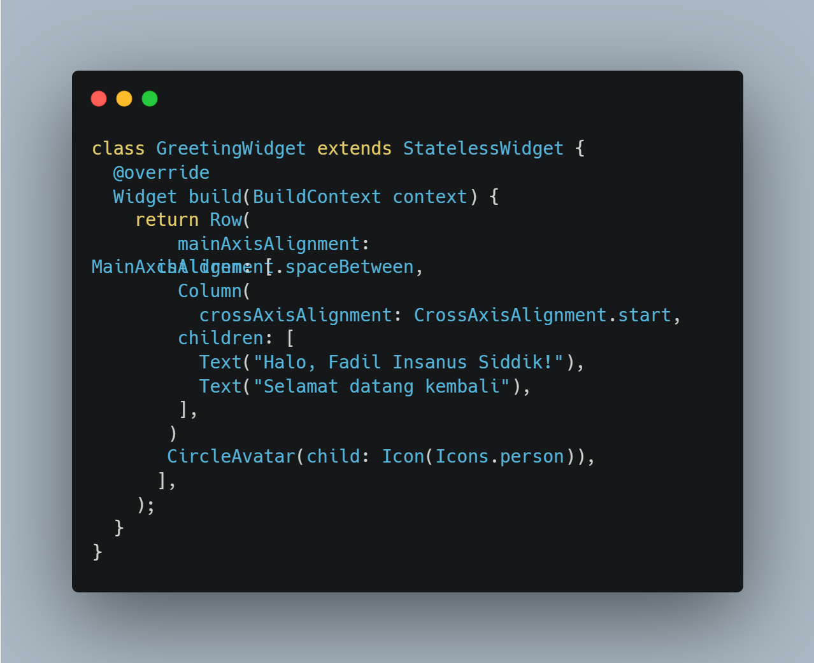
3.2 Membuat Card Saldo (Stateful)
Pada kode program ini, kita menggunakan StatefulWidget agar card bisa bereaksi saat ikon mata ditekan. Selain StatefulWidget, kita juga mengunakan variabel _isObscure untuk menyimpan status sensor dan variabel _balance untuk menyimpan nilai nominal.
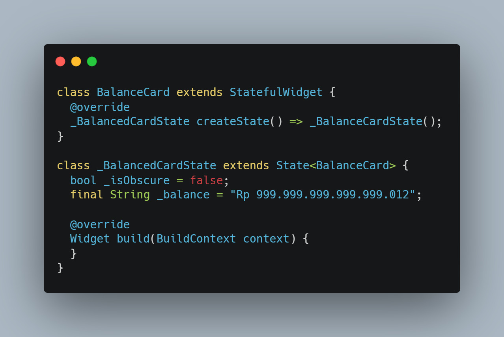
3.3 Menerapkan Interaktivitas (setState)
Pada bagian kode program ini, kita menggunakan setState() untuk membeti tahu bahwa ada perubahan data, sehingga UI dirender ulang.
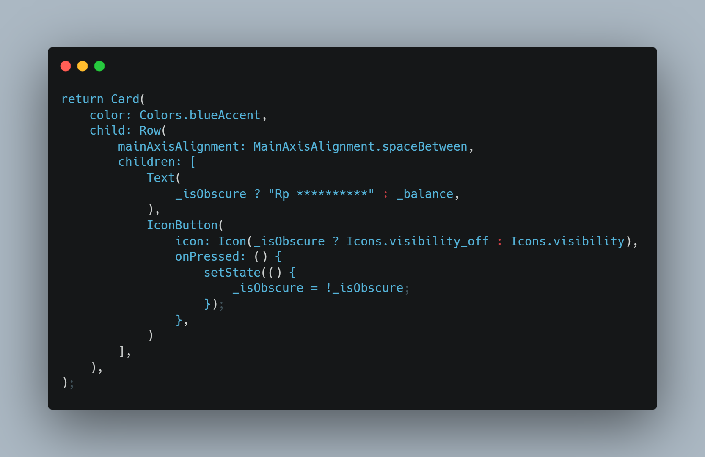
3.4 Hasil Akhir
Berikut hasil akhir ketika program dijalankan.
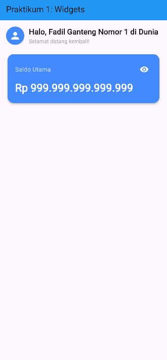
Berikut ketika ikon mata ditekan sehinga menyembunyikan nominal saldo
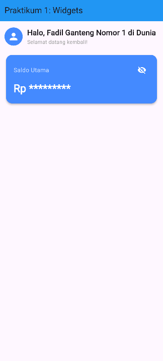
4. Latihan
4.1 Styling: Ubah warna tema BalanceCard dari biru (Colors.blueAccent) menjadi hijau emerald (Colors.teal).
Ganti setiap kode program yang sebelumnya menggunakan warna (Colors.blueAccent) menjadi (Colors.teal) atau hijau teal.
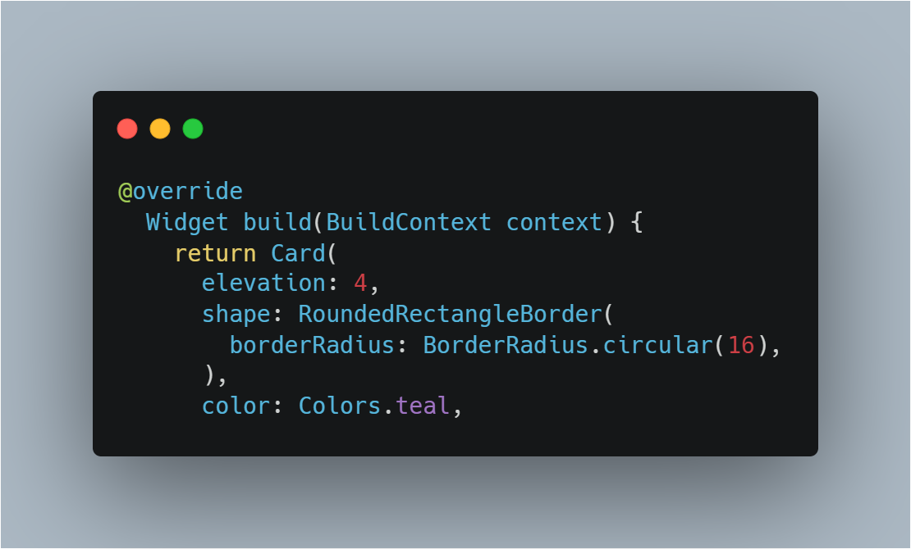
4.2 Modifikasi UI: Tambahkan teks statis berupa "No. Rekening: 1234-5678" di bagian bawah nominal saldo di dalam card.
Tambahkan kode program tersebut pada bagian bawah kode tampilan saldo dan sensor. Pada kode program dapat kita lihat jika terdapat syntax fontSize yang bertujuan untuk mengatur ukuran font yang digunakan pada teks (No. rekening: 1234-5678) dan juga color untuk mengatur warna yang digunakan pada teks tersebut.
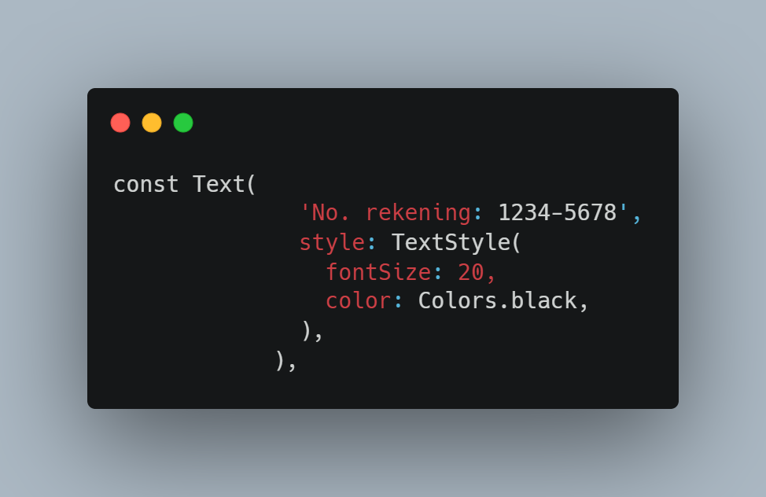
4.3 Hasil Akhir
Berikut hasil akhir ketika kode program dijalankan, dapat kita lihat jika warna telah diubah dan teks statis telah ditambahkan.
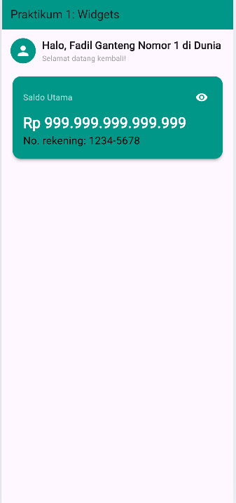
5. Modul 2: Layouting & Styling Row, Column, Container, dan ListTile
5.1 Menyusun Tombol Aksi (Row)
Pada bagian ini, kita menggunakan Row untuk meletakkan tombol Pemasukan, Pengeluaran, dan Transfer sejajar secara horizontal. Selain itu, kita juga menggunakan mainAxisAlignment untuk mengatur jarak antar elemen, dan juga spaceEvenly untuk membagi ruang kosong sama rata.
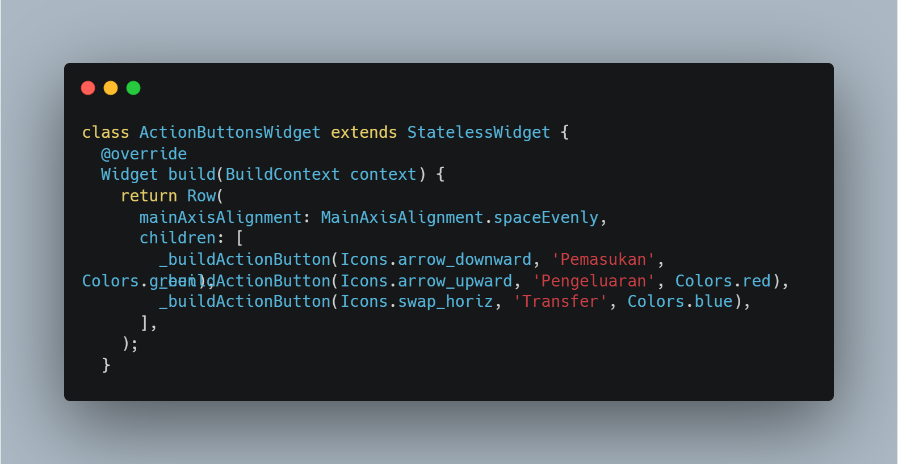
5.2 Menyusun Riwayat (Column + ListTile)
Pada bagian kode program ini, kita wajib menggunakan Column untuk mengurut daftar transaksi ke bawah. Langkahnya terdiri dari menumpuk teks judul dan daftar menggunakan Column, lalu menggunakan banyak listTile berturut-turut.
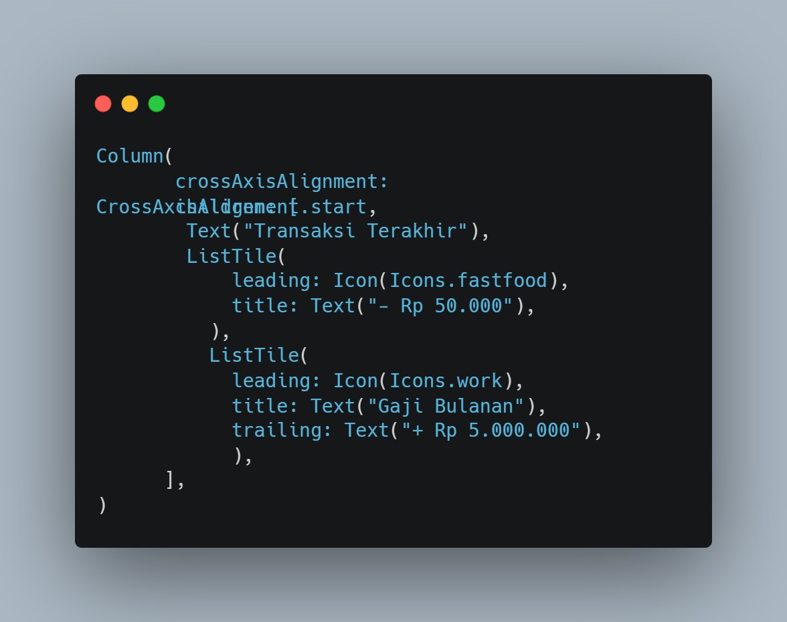
5.3 Integrasi Dashboard (Scrollable)
Pada kode program ini, kita menggabungkan komponen dari modul 1 dan modul 2, lalu membungkus keduanya dengan menggunakan SingleChildScrollView agar layer yang ada tidak overflow saat daftar memanjang.
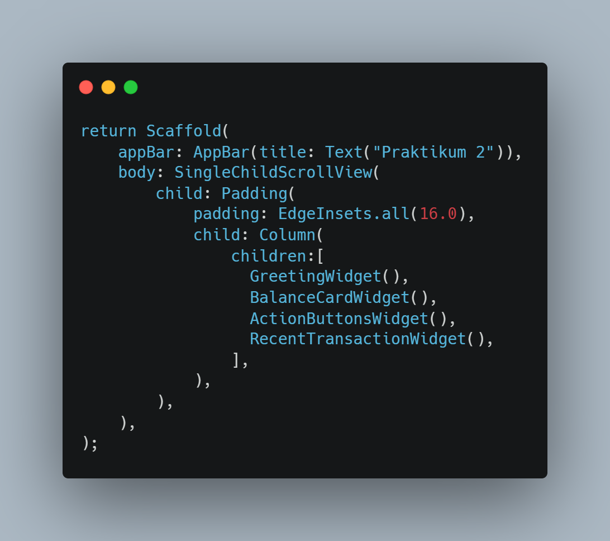
5.4 Hasil Akhir: Mockup Dashboard
Berikut merupakan hasil ketika kode program yang sudah dibuat dijalankan.
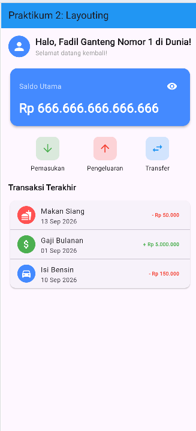
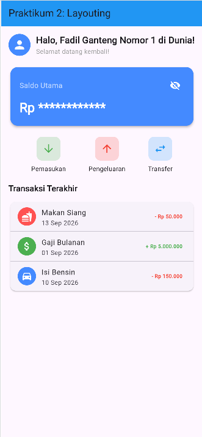
6. Latihan Modul 2
6.1 Styling: Pada widget Daftar Transaksi (ListTile), ubah warna trailing text pengeluaran menjadi merah dan text pemasukan menjadi hijau.
Pada bagian ini, kita harus mengubah semua color trailing pada bagian ListTile dengan ketentuan jika transaksi pengeluaran, trailing teks akan berwarna merah, dan jika transaksi pemasukan, maka trailing teks berwarna hijau. Contoh pada gambar, kita mengambil satu transaksi (Gaji Bulanan), yang mana pada transaksi ini dapat kita ketahui bahwa ini merupakan transaksi pemasukan dengan ditandai dengan tanda "+" pada awal nominal pemasukan. Pada teks ini kita ubah warna pada trailing teks nya menjadi hijau, lakukan juga pada 2 data transaksi lainnya.
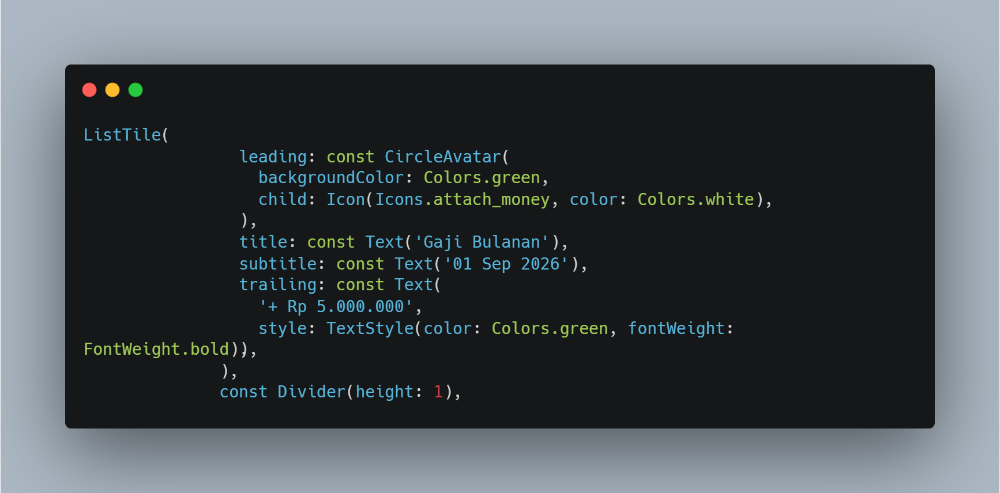
6.2 Tambah Data: Tambahkan 2 transaksi fiktif baru ke dalam daftar "Transaksi Terakhir" di bawah kode yang sudah ada.
Pada latihan ini, saya menambahkan 2 transaksi fiktif yaitu, Belanja Kebutuhan Bulanan (Pengeluaran) dan Jual Sertifikat Tanah (Pemasukan).
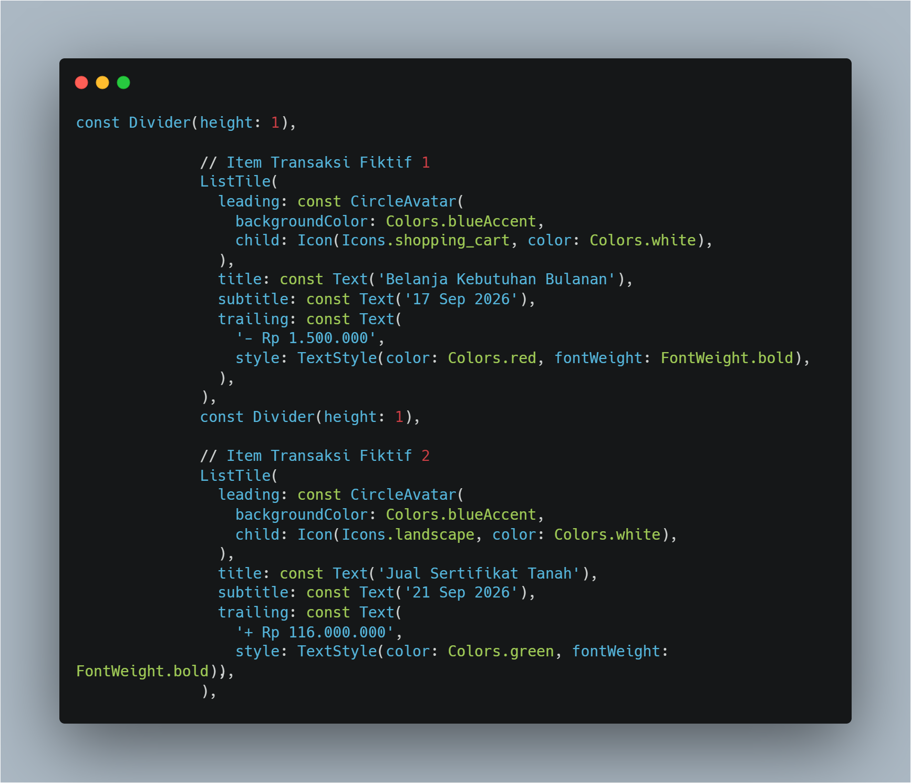
6.3 Hasil Akhir
Berikut hasil akhir setelah latihan dikerjakan dan kode program dijalankan.
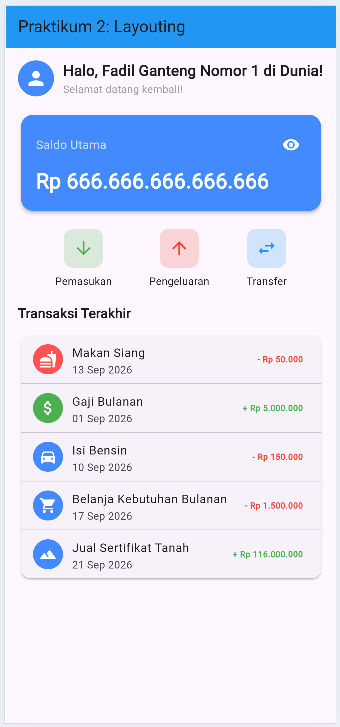
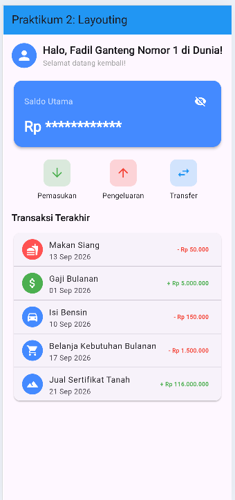
7. Kesimpulan
Berdasarkan praktikum yang telah dilakukan, dapat disimpulkan bahwa widget merupakan bagian penting dalam membangun antarmuka Flutter. Praktikum memberikan pemahaman mengenai penggunaan StatelessWidget dan StatefulWidget, serta penerapan setState() untuk membuat tampilan yang dapat merespons interaksi pengguna, seperti fitur menampilkan dan menyembunyikan saldo. Selain itu, penggunaan Row, Column, dan ListTile membantu dalam menyusun tampilan dashboard dan daftar transaksi. Melalui latihan, tampilan juga berhasil dimodifikasi dengan perubahan warna, penambahan nomor rekening, serta penambahan transaksi pemasukan dan pengeluaran.